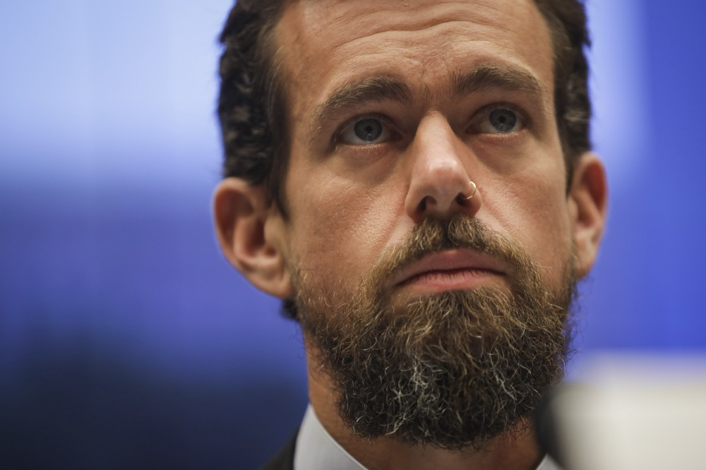

BAO DIEN TU
Kinh Doanh / Nong SanTech Platforms Love Moving Fast — Except When Their Users Are in Trouble
The CEOs of YouTube and Twitter are being far more cautious in addressing the problems of their platforms than they were in building them

Photo: Drew Angerer/Getty
Jack Dorsey and Susan Wojcicki seem to have little in common, aside from their jobs—running two of the biggest platforms on the internet.
Wojcicki, CEO of YouTube, comes across as an accomplished, even-keeled professional who blends in and shuns the spotlight. A Harvard graduate from a distinguished Silicon Valley family, she took over YouTube after successful stints at Intel and Google. A rare profile of her in the New York Times called her “the most measured person in tech.”
Dorsey, Twitter’s co-founder and CEO, is an unkempt idealist who throws himself into wellness trends, mindfulness retreats, and facial grooming experiments. An NYU dropout who once aspired to be a fashion designer, he helped start Twitter after he was rejected for a job at a shoe store. His onstage interview at the annual TED conference was only the latest in his ongoing tour of the media circuit.
Although the CEOs are quite different, their recent media appearances revealed they are grappling with the same kinds of problems on their respective platforms — and taking a strikingly similar approach to addressing them. This approach could be charitably described as deliberate, even philosophical, and that deliberation stands in stark contrast to the breakneck speed at which the platforms were built, grew, and continue to operate.
Both Twitter and YouTube are rife with abuse, harassment, misinformation, manipulation, and every manner of extremism. One platform is stalked by armies of human trolls and bots lobbing death threats at scale. The other sucks users through wormholes to parallel realities where Earth is flat, vaccines cause autism, and radical ideologies are the cure for society’s ills. Both struggled to contain the viral circulation of livestreams of the New Zealand massacre.
Neither CEO is blind to this — not anymore, at least. The Times found Wojcicki reflecting on a staff meeting she called to address the appearance on YouTube of bestiality images alongside children’s content. At TED, Dorsey sounded more like one of Twitter’s many critics than the company’s CEO: “It’s a pretty terrible situation when you’re coming to a service where ideally you want to learn something about the world, and you spend the majority of your time reporting abuse, receiving abuse, receiving harassment,” he said.
Both executives acknowledged that they had failed to anticipate the severity of the problems their platforms would create as they grew. This explanation has started to feel more like an excuse in the tech world. No doubt it’s true that the people who built the platforms that now dominate the global flow of information underestimated how their creations could be misused. But at this point, intentions are irrelevant. What matters is how they respond. And to judge by their recent words and their actions until now, Wojcicki and Dorsey are responding very slowly.
It’s true that both companies have begun hiring more human reviewers and using machine learning to flag potential policy violations, with YouTube focusing more on problematic content and Twitter on patterns of user behavior. But neither has undertaken fundamental changes to their algorithm or the structure of the platform, and both have used freedom of speech as an excuse for inaction.
This timid approach seems to come from the top. A Bloomberg feature in April painted Wojcicki and her team as obsessed with growth and engagement metrics, even as YouTube’s problems mounted. When her employees pressed her to address problematic content, Wojcicki reportedly demurred, saying it wasn’t her job to decide what users could say or see. In the Times profile, Wojcicki took issue with that characterization, pointing to the sheer complexity of content moderation. “It’s not like there is one lever we can pull and say, ‘Hey, let’s make all these changes,’ and everything would be solved,” she said. “That’s not how it works.”
The Times’ Daisuke Wakabayashi sat in on a meeting in which Wojcicki and her deputies pondered — in painstaking depth — the proper response to a potentially dangerous video called the “Condom Challenge.” They ultimately decided not to remove it. While more sympathetic than Bloomberg’s portrayal, the Times profile concluded that Wojcicki’s “deliberate style may be at odds with the pace and scale of horrors and just plain stupidity that relentlessly arises on YouTube.”
That will sound awfully familiar to anyone who has followed Dorsey’s handling of Twitter’s ongoing troubles with bots, neo-Nazis, and widespread harassment of women and people of color. While Dorsey has been admirably forthcoming about Twitter’s shortcomings, he rarely matches his frank words with decisive actions. An official update on Twitter’s progress toward its goals of healthier interactions showed mostly incremental improvements, such as a 16 percent decline in reports of abuse by users whom the victim doesn’t follow. The company is justifiably proud of the fact that it is now proactively flagging 38 percent of the abusive content on which it takes action, but the bigger surprise is that the company was doing none of this work as recently as a year ago. Until 2018 — more than a decade after the company was founded and years after the scale of abuse it enabled had become clear — Twitter had put the entire burden of reporting on its users.
2